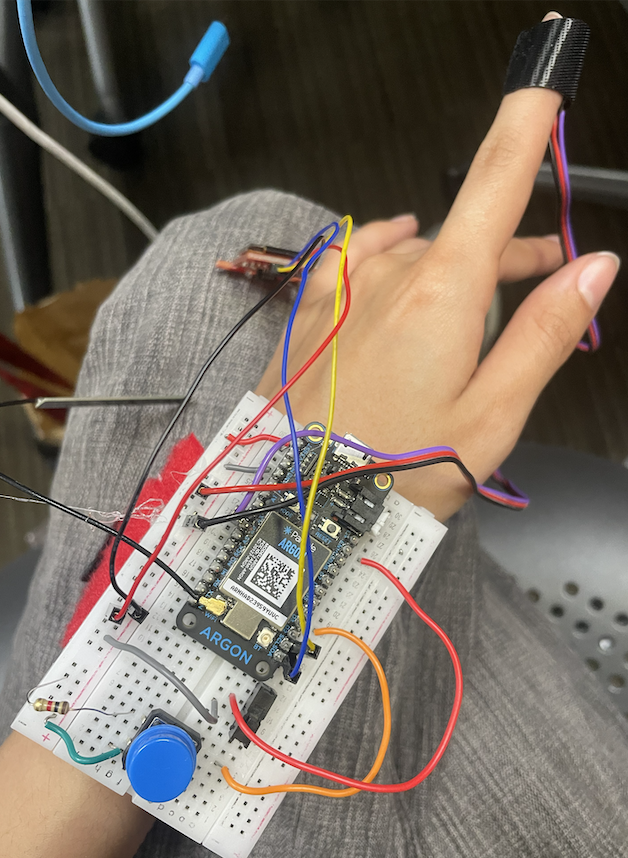

Environment Monitor and Dashboard: A device that tracks temperature and humidity using a DHT20 sensor, displays data on an OLED screen, and uploads readings to a cloud-based dashboard.
Hardware Components: The project utilizes a Photon 2 microcontroller, breadboard, DHT20 sensor, micro OLED display, push button, and jumper wires for circuit assembly.
Button Toggle Functionality: A latch-style button allows users to switch between displaying current temperature and humidity and viewing historical high and low values on the OLED screen.
DHT20 Sensor Integration: The device continuously measures temperature and humidity while tracking the highest and lowest recorded values.
OLED Display Output:
Screen 1: Displays real-time temperature and humidity data.
Screen 2: Shows the recorded high and low values for both temperature and humidity.
Cloud Data Transmission: The device publishes temperature and humidity data to the Initial State dashboard using Particle webhooks for real-time monitoring.
Dashboard Visualization: The dashboard is configured with four key widgets:
Current temperature: Displayed using a gauge.
Current humidity: Displayed using a gauge.
Historical temperature: Shown in a graph format.
Historical humidity: Shown in a graph format.
Temperature Dashboard with Initial State Diagram
UFO + Potentiometer
Scanning Light: Potentiometer and LEDs
Scanning Light: A project that creates an oscillating light pattern using five LEDs, with brightness and speed controlled by a potentiometer.
Hardware Components: Uses a Photon 2 microcontroller, breadboard, five LEDs, five 330-ohm resistors, a 10k-ohm potentiometer, and jumper wires for circuit assembly.
Oscillating Light Pattern: The LEDs blink sequentially from right to left and back, mimicking the visual effects seen in Knight Rider’s KITT and Battlestar Galactica’s Cylons.
Potentiometer-Controlled Speed: The potentiometer adjusts the blink rate of the LEDs:
Fully clockwise: The lights blink rapidly, creating the illusion of being constantly on.
Fully counterclockwise: The lights blink very slowly.
Potentiometer-Controlled Brightness: The potentiometer also adjusts LED brightness using PWM:
Fully clockwise: LEDs are at maximum brightness.
Fully counterclockwise: LEDs are dim but never completely off.
Code Implementation: Uses a loop with either a counter variable or a for loop to iterate through LED states, avoiding while loops.
Tea Brewing Process
State Machine Tea Brewer with Blynk: A tea brewing simulation using state machines and a Blynk app for control.
State Machine Logic: Five states (Idle, Heat, Steep, Hold, Pour) transition based on time, brewing status, and cup presence.
App Functionality: Controls brewing, displays state, monitors cup presence, and toggles sound playback.
Cup Status: Prevents pouring if the cup is missing.
State Status: Displays the current brewing state in the Blynk app.
Sound Toggle: Enables/disables melody playback at the end of brewing.
Brewing Toggle: Starts or stops the brewing process.
Blynk Datastreams: Manages real-time communication between the app and Photon 2.
Testing: Verifies state transitions, cup detection, app interactions, and melody playback.
Implementation Stages:
State Machine Logic: Defines states and transition conditions.
Blynk Integration: Sets up app controls and datastreams.
App-Device Communication: Syncs brewing status and user inputs.
Melody Playback: Plays a 16-note tune at the end of brewing.
Tea Brewing States + Magnetic Switch
LED Dice
Electronic Dice: A project that simulates a six-sided die using a 3x3 grid of LEDs, with a push button triggering a random roll.
Hardware Components: Uses a Photon 2 microcontroller, breadboard, nine LEDs, nine resistors, one push button, and jumper wires for circuit assembly.
Die Roll Simulation: When the button is pressed, a random number between 1 and 6 is generated, displaying the corresponding LED pattern.
Button Latch Mechanism: The push button is configured as a latch, meaning holding it down will not trigger multiple rolls—each press results in a single roll.
Extra Credit - Arrays: The six LED patterns for different die values are stored in an array, allowing efficient control via a loop:
3x3 LED Grid: Each position corresponds to an index in a 9-element array.
LED Pin Mapping: A second array stores pin assignments for faster access.
Loop Implementation: Uses a for loop to quickly set LED states based on the generated die roll.
LED Interactive Dice
Dice Value Represented by 3x3 Grid
Heart Rate Monitor

Heart Rate Monitor
Heart Rate Sensor: Measures heart rate using the Pulse Sensor Amped with a green light similar to Apple Watch.
Pulse Sensor Amped Wiring: Connects GND to ground, VCC to 3.3V power, and Data to an analog pin for readings.
Library Installation: Install the PulseSensorAmped_P2 library from Workbench for sensor functionality.
Configuration: Includes PulseSensorAmped.h, defines the pulse pin as A0, and initializes a PulseSensor object.
Initialization: Calls analogRead(PIN_PULSE) before attaching and starting the PulseSensor to prevent library issues.
Sensor Readings: Uses PulseSensorAmped_data(int BPM, int IBI) to retrieve beats per minute (BPM) and interbeat interval (IBI).
Handling Signal Loss: Detects disconnection with PulseSensorAmped_lost() to monitor sensor stability.
Credits: Based on official documentation and library resources.
OLED: Etch-a-Sketch
I2C Communication
OLED Screens and I2C Communication: This course covers the fundamentals of OLED screens, their advantages, and how to establish communication using the I2C protocol.
Organic Light-Emitting Diodes (OLEDs): OLEDs are advanced display components that are thinner, bendable, and provide better visual output compared to regular LEDs. They are commonly used in high-end TVs, monitors, and mobile screens, though they are more expensive than traditional LEDs.
Micro OLED Screen: The project utilizes a SparkFun Micro OLED breakout board featuring a 64x48 pixel blue text display.
OLED Breakout Board: This board provides access to the delicate pins of the OLED screen and enables I2C communication, minimizing the number of required connections to just two pins.
I2C Communication: I2C (Inter-Integrated Circuit) is a serial, synchronous communication protocol that allows a central device to communicate with multiple peripherals. It operates using two primary pins: SDA (data) and SCL (clock), making it a standardized and efficient solution for various components. While it simplifies wiring, I2C consumes more power and has a lower transfer speed than some alternatives like SPI.
Photon 2 - OLED Pin Mapping: The OLED connects to the Photon 2 microcontroller using four key pins:
GND: Establishes the ground connection.
3V3: Provides a 3.3V power supply.
SDA (Blue): Serves as the data pin for serial communication.
SCL (Yellow): Functions as the clock pin for synchronization.
OLED Library: The SparkFunMicroOLED library is used to simplify communication with the OLED, allowing for easy text rendering and display management.
Lab - Etch-a-Sketch: We completed a lab project involves creating an interactive Etch-a-Sketch using an OLED screen, with two potentiometers controlling the drawing movement and a button used to reset the display.